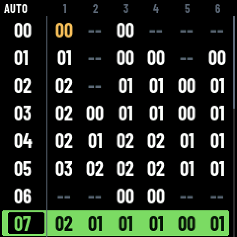
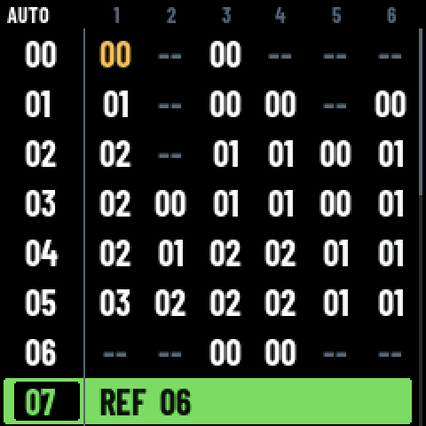
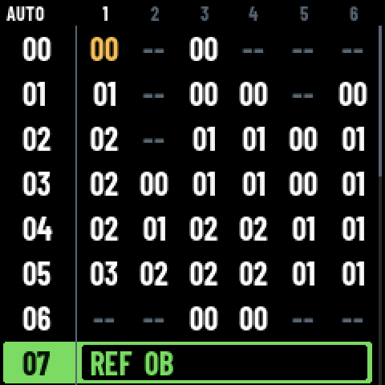
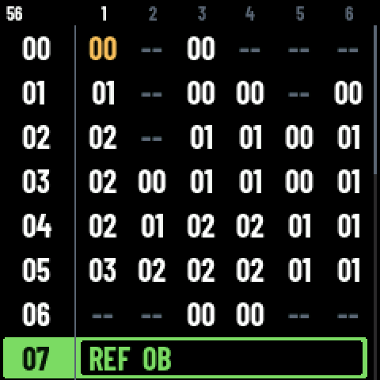
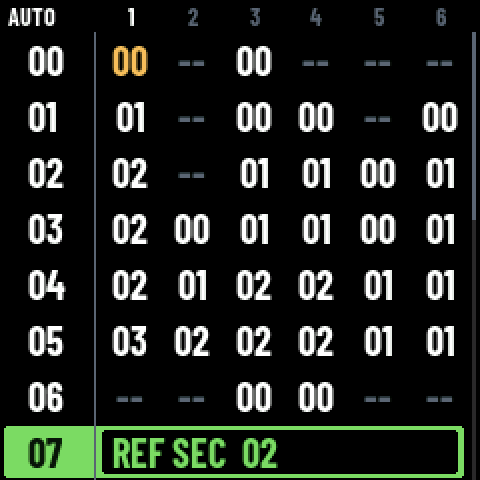
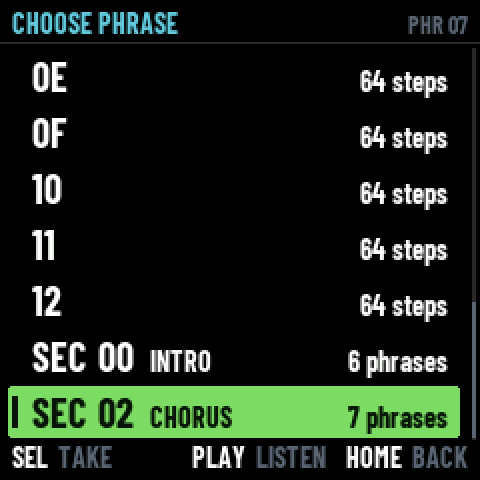
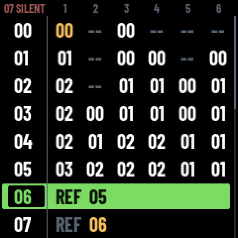

A REF row plays a phrase that is already in the song, or a whole
section of it, instead of holding blocks of its own. The machine read one, drew one, played one,
renumbered one and deleted one — and until today no gesture on the panel made one: they
only ever arrived in a file. Now KNOB 3 makes one. Every picture below comes
out of the firmware's own framebuffer.
On a phrase's number, KNOB 3 used to set its length. It now says what the row is: blocks of its own, or a pointer. Two states, so a detent either way is the other one. The length moved one knob along, to KNOB 4, which did nothing there — and that is the rule the rest of the machine already follows: KNOB 3 is the identity of what the cursor holds, KNOB 4 is how much. The block in a cell and its level; the effect in FX and its value; now the kind of a row and its length.


The blocks the row held. It comes back an empty phrase, not the one it was.
UNDO. The conversion journals the whole arrangement, so one ALGO to the left is one turn too many taken back.
Two truths about one row is the class of bug the cursor's own rewrite got rid of on 29/10.
A phrase wears eight cells; a reference wears one, and the cursor has two places on it: its number and that cell. KNOB 2 stops there and goes no further. On the cell, KNOB 3 walks where it points — the phrases that hold blocks of their own first, then the sections — and KNOB 4 is how long it plays: AUTO, which is the whole of what it points at, or a number of steps that cuts it short.


Turning KNOB 3 past the last phrase reaches the sections: REF SEC 02
plays every phrase of section 02 in order. It lasts as long as they do and the file keeps no
length for it, so KNOB 4 says nothing there.

PRESETS opens the same list KNOB 3 walks, saying what each one is: a phrase with its name and how long it lasts, a section with its name and how many phrases it holds. The bar at the left marks the one it points at now. PLAY listens, SEL takes, HOME leaves it as it was — the same screen as CHOOSE PATTERN, built from the song instead of a track.

A reference that comes to point at a reference resolves to nothing, so turning a row others name into a reference makes their row silent. The turn still happens — it is your knob — but the corner names the casualty, in the red it keeps for what went wrong.

song_entry_resolve() gives nothing for any of them, and a knob that
lands on silence is a knob that lies. A file may still hold one; the row then plays nothing,
as it did before.player_entry() reports the reference's own
row for the whole run.REF 0B says less than REF 0B
CHORUS would.